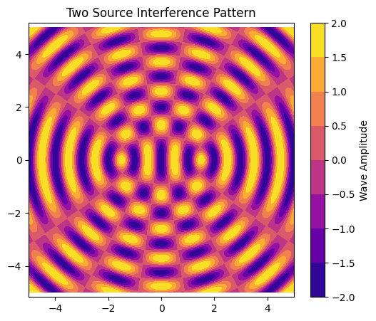
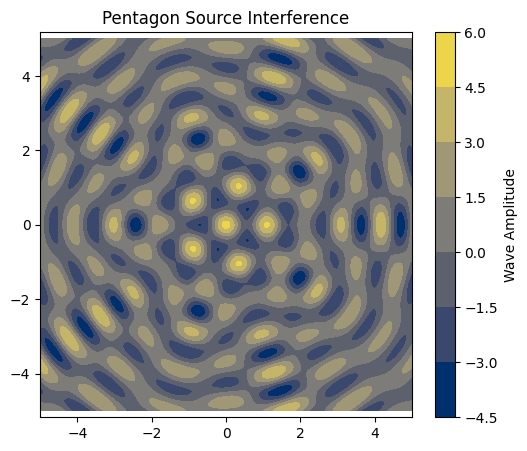

🌊 Interference Patterns on a Water Surface
Simulating Wave Superposition from Point Sources in Regular Polygons
🯠Motivation
Interference occurs when waves from different sources meet and combine. On a water surface, these patterns are easy to visualize as ripples intersect. This project explores how multiple wave sources positioned at the vertices of a regular polygon create beautiful and informative interference patterns.
We study this using:
- Mathematical modeling of wave propagation
- Superposition of wave equations
- Visualizations using heatmaps and animations
📠Wave Model
A circular wave on the water surface from a source at \((x_0, y_0)\) is described by:
Where:
- \(A\): Amplitude (same for all)
- \(k = \frac{2\pi}{\lambda}\): Wave number
- \(\omega = 2\pi f\): Angular frequency
- \(r = \sqrt{(x - x_0)^2 + (y - y_0)^2}\): Distance to the source
- \(\phi\): Initial phase (constant across sources)
🧪 Python Simulation Setup
We'll simulate wave patterns for:
- One source
- Two sources
- Multiple sources forming triangle and pentagon
🧠Python Code: Core Functions
import numpy as np
import matplotlib.pyplot as plt
from matplotlib import cm
from matplotlib.animation import FuncAnimation, PillowWriter
# Wave parameters
A = 1 # Amplitude
f = 1 # Frequency (Hz)
λ = 1 # Wavelength
k = 2 * np.pi / λ
ω = 2 * np.pi * f
φ = 0 # Phase
# Grid
x = np.linspace(-5, 5, 400)
y = np.linspace(-5, 5, 400)
X, Y = np.meshgrid(x, y)
def wave_from_source(x0, y0, t):
R = np.sqrt((X - x0)**2 + (Y - y0)**2) + 1e-6 # avoid zero division
return A * np.cos(k * R - ω * t + φ)
def total_wave(sources, t):
return sum(wave_from_source(x0, y0, t) for (x0, y0) in sources)
🌊 Visualizing a Single Source
plt.figure(figsize=(6,5))
plt.contourf(X, Y, wave_from_source(0, 0, 0), cmap='viridis')
plt.title("Single Source Interference Pattern")
plt.colorbar(label='Wave Amplitude')
plt.axis('equal')
plt.show()

🌊 Two Sources Interference
sources = [(-1.5, 0), (1.5, 0)]
plt.figure(figsize=(6,5))
plt.contourf(X, Y, total_wave(sources, 0), cmap='plasma')
plt.title("Two Source Interference Pattern")
plt.colorbar(label='Wave Amplitude')
plt.axis('equal')
plt.show()

🔺 Triangle Interference Pattern
# Equilateral triangle sources
r = 2
triangle_sources = [(r*np.cos(θ), r*np.sin(θ)) for θ in [0, 2*np.pi/3, 4*np.pi/3]]
plt.figure(figsize=(6,5))
plt.contourf(X, Y, total_wave(triangle_sources, 0), cmap='coolwarm')
plt.title("Triangle Source Interference")
plt.colorbar(label='Wave Amplitude')
plt.axis('equal')
plt.show()

🔷 Pentagon Interference Pattern
# Pentagon sources
r = 2
pentagon_sources = [(r*np.cos(θ), r*np.sin(θ)) for θ in np.linspace(0, 2*np.pi, 5, endpoint=False)]
plt.figure(figsize=(6,5))
plt.contourf(X, Y, total_wave(pentagon_sources, 0), cmap='cividis')
plt.title("Pentagon Source Interference")
plt.colorbar(label='Wave Amplitude')
plt.axis('equal')
plt.show()

🥠Animation (GIF) of Wave Interference
import numpy as np
import matplotlib.pyplot as plt
from matplotlib.animation import FuncAnimation, PillowWriter
from IPython.display import HTML, Image
import base64
import os
# Wave parameters
A = 1
f = 1
λ = 1
k = 2 * np.pi / λ
ω = 2 * np.pi * f
φ = 0
# Grid
x = np.linspace(-5, 5, 400)
y = np.linspace(-5, 5, 400)
X, Y = np.meshgrid(x, y)
def wave_from_source(x0, y0, t):
R = np.sqrt((X - x0)**2 + (Y - y0)**2) + 1e-6
return A * np.cos(k * R - ω * t + φ)
def total_wave(sources, t):
return sum(wave_from_source(x0, y0, t) for (x0, y0) in sources)
# Pentagon source example
r = 2
sources = [(r * np.cos(theta), r * np.sin(theta)) for theta in np.linspace(0, 2*np.pi, 5, endpoint=False)]
# Create animation
fig, ax = plt.subplots(figsize=(6,6))
cax = ax.imshow(np.zeros_like(X), extent=[-5, 5, -5, 5], cmap='inferno', animated=True)
fig.colorbar(cax, ax=ax, label='Amplitude')
ax.set_title("Wave Interference Animation")
def update(frame):
t = frame * 0.1
Z = total_wave(sources, t)
cax.set_array(Z)
ax.set_title(f"t = {t:.2f} s")
return [cax]
ani = FuncAnimation(fig, update, frames=60, blit=True)
# Save GIF
gif_path = "wave_interference.gif"
ani.save(gif_path, writer=PillowWriter(fps=10))
plt.close()
# Display GIF
with open(gif_path, "rb") as f:
data = f.read()
data_url = "data:image/gif;base64," + base64.b64encode(data).decode()
display(HTML(f'<img src="{data_url}" width=400>'))
# Optional download link
from google.colab import files
files.download(gif_path)
🧠Observations & Analysis
✅ Constructive Interference:
Occurs when wave crests from different sources meet — resulting in higher amplitude.
⌠Destructive Interference:
Occurs when a crest meets a trough — resulting in near-zero displacement.
- Single Source: Concentric circular ripples.
- Two Sources: Alternating bands of constructive/destructive interference.
- Triangle/Pentagon: Symmetric floral patterns due to coherent superposition — more complex as sources increase.
✅ Conclusion
This simulation visually captures the essence of wave interference and superposition principles using simple mathematical models. As more sources are added in symmetrical arrangements, the complexity and beauty of the patterns grow — reinforcing the link between geometry and physics.